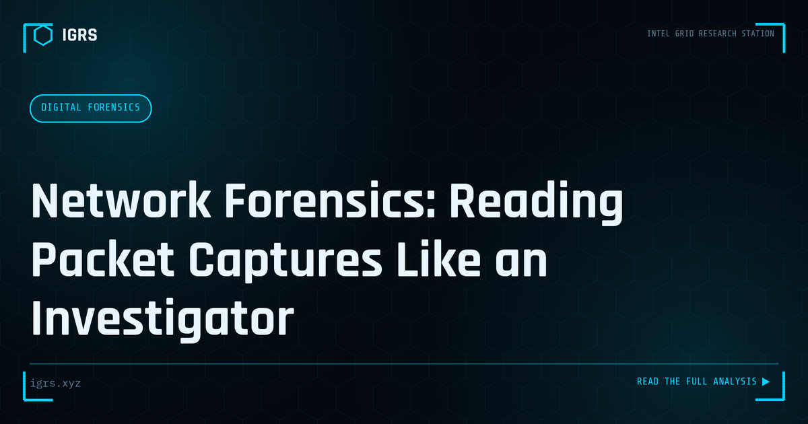

Network Forensics: Reading Packet Captures Like an Investigator
| File No. | IGRS-029/2026 |
| Subject | Practical guide to PCAP analysis for incident investigation and intrusion reconstruction |
| Category | Digital Forensics |
| Author | Manuj Kumar Pandey |
| Published | 2026-05-17 |
| Reading time | 12 minutes |
Network traffic doesn't lie. A properly captured PCAP can reconstruct exactly what happened during an intrusion, data exfiltration, or attack. How to read it.
Network Traffic Analysis: Seeing What Happened on the Wire
Network traffic analysis is the discipline of examining captured packets and flow data to detect threats, investigate incidents, and reconstruct activity. Where logs tell you what systems recorded, traffic analysis shows you what actually crossed the network — the communication, the data transfers, the malicious patterns. This guide covers the methodology and tools of network traffic analysis for security professionals and investigators.
Types of Network Data
| Data Type | Detail Level | Use |
|---|---|---|
| Full packet capture (PCAP) | Complete content | Deep investigation, reconstruction |
| NetFlow/IPFIX | Metadata only | Scalable analysis, patterns |
| Session data | Connection summaries | Communication mapping |
| Alert data | IDS/IPS triggers | Known-threat detection |
Essential Tools
The network traffic analysis toolkit is largely open-source and powerful:
- Wireshark — the definitive packet analyser for deep inspection
- Zeek — generates rich connection logs and protocol metadata
- NetworkMiner — passively reconstructs files and sessions
- Suricata — IDS/IPS with detailed logging
- tcpdump — lightweight command-line capture
- Arkime — large-scale PCAP indexing and search
Capturing Traffic Effectively
Effective analysis starts with good capture. Traffic is captured at strategic points — network taps, SPAN/mirror ports, or on key hosts. The capture location determines visibility: perimeter captures show external communication, while internal captures reveal lateral movement. For investigation, capturing at multiple points provides the complete picture of how traffic flowed through the environment.
Identifying Malicious Patterns
Network traffic analysis reveals attacker behaviour through characteristic patterns:
- Beaconing — regular callbacks to C2 servers
- Data exfiltration — large or unusual outbound transfers
- DNS tunnelling — data hidden in DNS queries
- Lateral movement — unusual internal connections
- Port scanning — reconnaissance activity
- Protocol anomalies — non-standard use of common ports
Reconstructing Sessions and Files
One of traffic analysis's most powerful capabilities is reconstruction. Tools like NetworkMiner and Wireshark can reassemble TCP streams to recover transferred files, extract credentials sent in plaintext, and reconstruct web sessions. In an investigation, this reveals exactly what data an attacker accessed or exfiltrated — critical for both prosecution and breach scope assessment.
Detecting Command and Control
Identifying C2 communication is central to threat investigation. C2 traffic often exhibits beaconing — regular, periodic connections to the controller — sometimes disguised within normal protocols like HTTPS or DNS. Analysis of timing regularity, destination reputation, and traffic patterns exposes C2 channels even when the content is encrypted. Cutting the C2 connection is a key containment action.
Encrypted Traffic Analysis
The growth of encryption presents challenges, as packet content is hidden. However, much can still be learned from metadata: connection patterns, timing, volumes, destinations, and TLS handshake details (including certificate information and JA3 fingerprints). Even without decrypting content, these signals reveal beaconing, identify suspicious destinations, and fingerprint malware families through their TLS characteristics.
Legal Considerations in India
Network traffic capture and analysis must respect legal boundaries. Within an organisation's own network, monitoring is generally permissible with appropriate policy and notice. For investigation, captured traffic used as evidence requires Section 63 BSA certification and hash verification. Intercepting communications beyond one's own network requires lawful authority. Investigators must ensure their traffic analysis is conducted within proper legal authority.
Integrating with Investigation
Network traffic analysis rarely stands alone — it integrates with the broader investigation. Traffic findings correlate with endpoint forensics (which host generated suspicious traffic), log analysis (authentication and system events), and threat intelligence (known-bad destinations). This correlation builds the complete attack narrative from initial access through to impact.
Building Traffic Analysis Skills
Proficiency in network traffic analysis comes from understanding protocols deeply, recognising normal versus anomalous patterns, mastering tools like Wireshark and Zeek, and practising on real captures. For Indian security professionals and investigators, combining technical traffic analysis with the legal framework for evidence produces network investigations that are both insightful and court-ready. As networks carry ever more of both legitimate activity and attacks, the ability to read the traffic remains a foundational security skill.